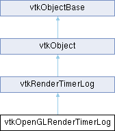

|
Etrek
|
|
Etrek
|
OpenGL2 override for vtkRenderTimerLog. More...
#include <vtkOpenGLRenderTimerLog.h>

Classes | |
| struct | OGLEvent |
| struct | OGLFrame |
Public Member Functions | |
| vtkTypeMacro (vtkOpenGLRenderTimerLog, vtkRenderTimerLog) | |
| void | PrintSelf (ostream &os, vtkIndent indent) override |
| bool | IsSupported () VTK_FUTURE_CONST override |
| bool | GetLoggingEnabled () VTK_FUTURE_CONST override |
| void | MarkFrame () override |
| void | MarkStartEvent (const std::string &name) override |
| void | MarkEndEvent () override |
| bool | FrameReady () override |
| Frame | PopFirstReadyFrame () override |
| void | ReleaseGraphicsResources () override |
| vtkSetMacro (MinTimerPoolSize, size_t) | |
| vtkGetMacro (MinTimerPoolSize, size_t) | |
| Public Member Functions inherited from vtkRenderTimerLog | |
| vtkTypeMacro (vtkRenderTimerLog, vtkObject) | |
| void | PrintSelf (ostream &os, vtkIndent indent) override |
| ScopedEventLogger | StartScopedEvent (const std::string &name) |
| vtkSetMacro (LoggingEnabled, bool) | |
| vtkGetMacro (LoggingEnabled, bool) | |
| vtkBooleanMacro (LoggingEnabled, bool) | |
| vtkSetMacro (FrameLimit, unsigned int) | |
| vtkGetMacro (FrameLimit, unsigned int) | |
| Public Member Functions inherited from vtkObject | |
| vtkBaseTypeMacro (vtkObject, vtkObjectBase) | |
| virtual void | DebugOn () |
| virtual void | DebugOff () |
| bool | GetDebug () |
| void | SetDebug (bool debugFlag) |
| virtual void | Modified () |
| virtual vtkMTimeType | GetMTime () |
| void | RemoveObserver (unsigned long tag) |
| void | RemoveObservers (unsigned long event) |
| void | RemoveObservers (const char *event) |
| void | RemoveAllObservers () |
| vtkTypeBool | HasObserver (unsigned long event) |
| vtkTypeBool | HasObserver (const char *event) |
| vtkTypeBool | InvokeEvent (unsigned long event) |
| vtkTypeBool | InvokeEvent (const char *event) |
| std::string | GetObjectDescription () const override |
| unsigned long | AddObserver (unsigned long event, vtkCommand *, float priority=0.0f) |
| unsigned long | AddObserver (const char *event, vtkCommand *, float priority=0.0f) |
| vtkCommand * | GetCommand (unsigned long tag) |
| void | RemoveObserver (vtkCommand *) |
| void | RemoveObservers (unsigned long event, vtkCommand *) |
| void | RemoveObservers (const char *event, vtkCommand *) |
| vtkTypeBool | HasObserver (unsigned long event, vtkCommand *) |
| vtkTypeBool | HasObserver (const char *event, vtkCommand *) |
| template<class U, class T> | |
| unsigned long | AddObserver (unsigned long event, U observer, void(T::*callback)(), float priority=0.0f) |
| template<class U, class T> | |
| unsigned long | AddObserver (unsigned long event, U observer, void(T::*callback)(vtkObject *, unsigned long, void *), float priority=0.0f) |
| template<class U, class T> | |
| unsigned long | AddObserver (unsigned long event, U observer, bool(T::*callback)(vtkObject *, unsigned long, void *), float priority=0.0f) |
| vtkTypeBool | InvokeEvent (unsigned long event, void *callData) |
| vtkTypeBool | InvokeEvent (const char *event, void *callData) |
| virtual void | SetObjectName (const std::string &objectName) |
| virtual std::string | GetObjectName () const |
| Public Member Functions inherited from vtkObjectBase | |
| const char * | GetClassName () const |
| virtual vtkTypeBool | IsA (const char *name) |
| virtual vtkIdType | GetNumberOfGenerationsFromBase (const char *name) |
| virtual void | Delete () |
| virtual void | FastDelete () |
| void | InitializeObjectBase () |
| void | Print (ostream &os) |
| void | Register (vtkObjectBase *o) |
| virtual void | UnRegister (vtkObjectBase *o) |
| int | GetReferenceCount () |
| void | SetReferenceCount (int) |
| bool | GetIsInMemkind () const |
| virtual void | PrintHeader (ostream &os, vtkIndent indent) |
| virtual void | PrintTrailer (ostream &os, vtkIndent indent) |
| virtual bool | UsesGarbageCollector () const |
Static Public Member Functions | |
| static vtkOpenGLRenderTimerLog * | New () |
| Static Public Member Functions inherited from vtkRenderTimerLog | |
| static vtkRenderTimerLog * | New () |
| Static Public Member Functions inherited from vtkObject | |
| static vtkObject * | New () |
| static void | BreakOnError () |
| static void | SetGlobalWarningDisplay (vtkTypeBool val) |
| static void | GlobalWarningDisplayOn () |
| static void | GlobalWarningDisplayOff () |
| static vtkTypeBool | GetGlobalWarningDisplay () |
| Static Public Member Functions inherited from vtkObjectBase | |
| static vtkTypeBool | IsTypeOf (const char *name) |
| static vtkIdType | GetNumberOfGenerationsFromBaseType (const char *name) |
| static vtkObjectBase * | New () |
| static void | SetMemkindDirectory (const char *directoryname) |
| static bool | GetUsingMemkind () |
Protected Member Functions | |
| bool | DoLogging () VTK_FUTURE_CONST |
| Frame | Convert (const OGLFrame &oglFrame) |
| Event | Convert (const OGLEvent &oglEvent) |
| OGLEvent & | NewEvent () |
| OGLEvent * | DeepestOpenEvent () |
| OGLEvent & | WalkOpenEvents (OGLEvent &event) |
| vtkOpenGLRenderTimer * | NewTimer () |
| void | ReleaseTimer (vtkOpenGLRenderTimer *timer) |
| void | ReleaseOGLFrame (OGLFrame &frame) |
| void | ReleaseOGLEvent (OGLEvent &event) |
| void | TrimTimerPool () |
| void | CheckPendingFrames () |
| bool | IsFrameReady (OGLFrame &frame) |
| bool | IsEventReady (OGLEvent &event) |
| void | ForceCloseFrame (OGLFrame &frame) |
| void | ForceCloseEvent (OGLEvent &event) |
| Protected Member Functions inherited from vtkObject | |
| void | RegisterInternal (vtkObjectBase *, vtkTypeBool check) override |
| void | UnRegisterInternal (vtkObjectBase *, vtkTypeBool check) override |
| void | InternalGrabFocus (vtkCommand *mouseEvents, vtkCommand *keypressEvents=nullptr) |
| void | InternalReleaseFocus () |
| Protected Member Functions inherited from vtkObjectBase | |
| virtual void | ReportReferences (vtkGarbageCollector *) |
| vtkObjectBase (const vtkObjectBase &) | |
| void | operator= (const vtkObjectBase &) |
Protected Attributes | |
| OGLFrame | CurrentFrame |
| std::deque< OGLFrame > | PendingFrames |
| std::queue< Frame > | ReadyFrames |
| std::queue< vtkOpenGLRenderTimer * > | TimerPool |
| size_t | MinTimerPoolSize |
| Protected Attributes inherited from vtkRenderTimerLog | |
| bool | LoggingEnabled |
| unsigned int | FrameLimit |
| Protected Attributes inherited from vtkObject | |
| bool | Debug |
| vtkTimeStamp | MTime |
| vtkSubjectHelper * | SubjectHelper |
| std::string | ObjectName |
| Protected Attributes inherited from vtkObjectBase | |
| std::atomic< int32_t > | ReferenceCount |
| vtkWeakPointerBase ** | WeakPointers |
Additional Inherited Members | |
| Static Protected Member Functions inherited from vtkObjectBase | |
| static vtkMallocingFunction | GetCurrentMallocFunction () |
| static vtkReallocingFunction | GetCurrentReallocFunction () |
| static vtkFreeingFunction | GetCurrentFreeFunction () |
| static vtkFreeingFunction | GetAlternateFreeFunction () |
OpenGL2 override for vtkRenderTimerLog.
|
overridevirtual |
Returns true if there are any frames ready with complete timing info.
Reimplemented from vtkRenderTimerLog.
|
inlineoverride |
Overridden to do support check before returning.
|
overridevirtual |
Returns true if stream timings are implemented for the current graphics backend.
Reimplemented from vtkRenderTimerLog.
|
overridevirtual |
Reimplemented from vtkRenderTimerLog.
|
overridevirtual |
Call to mark the start of a new frame, or the end of an old one. Does nothing if no events have been recorded in the current frame.
Reimplemented from vtkRenderTimerLog.
|
overridevirtual |
Mark the beginning or end of an event.
Reimplemented from vtkRenderTimerLog.
|
overridevirtual |
Retrieve the first available frame's timing info. The returned frame is removed from this log.
Reimplemented from vtkRenderTimerLog.
|
overridevirtual |
|
overridevirtual |
Releases any resources allocated on the graphics device.
Reimplemented from vtkRenderTimerLog.
| vtkOpenGLRenderTimerLog::vtkSetMacro | ( | MinTimerPoolSize | , |
| size_t | ) |
This implementations keeps a pool of vtkRenderTimers around, recycling them to avoid constantly allocating/freeing them. The pool is sometimes trimmed to free up memory if the number of timers in the pool is much greater the the number of timers currently used. This setting controls the minimum number of timers that will be kept. More may be kept if they are being used, but the pool will never be trimmed below this amount.
Default value is 32, but can be adjusted for specific use cases.